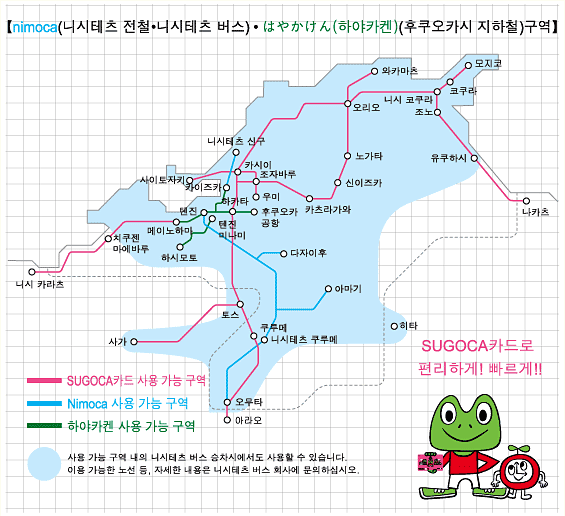
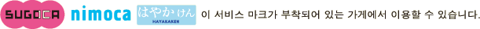

SUGOCA카드 1장으로 후쿠오카시 지하철과 니시테츠 전철 그리고 니시테츠 버스를 탈 수 있습니다.
※상호 이용이 가능한 각 구역에서 사용할 때는 각 회사의 약관 등에 따릅니다.

- 후쿠오카시 지하철을 제외한 상호 이용 가능한 구역에서 사용했을 경우, SUGOCA카드 사용 구역 내의 기기에서는 이용 내역에 역명이 표시되거나 프린트되지 않습니다. 역명을 포함한 상세 이력이 필요한 경우에는 이용한 회사의 구역 내에서 확인하십시오.
- 상호 이용 가능한 각 구역의 IC카드 전용 기기에는「nimoca(니모카)」「はやかけん(하야카켄)」 등의 마크가 부착되어 있습니다.
- 상호 이용 서비스에 대한 자세한 내용은 이용하신 역의 역무원에게 문의하십시오.
- 각 구역 내의 어느 한 역에서 내리는 경우에만 사용할 수 있습니다.
- 내릴 역을 지나쳐 사용 가능 구역 밖으로 벗어나거나, 다른 구역에 걸친 운행에는 이용할 수 없습니다.
- 신칸센은 이용할 수 없습니다. ※SUGOCA카드는 니시테츠 버스의 환승 할인이 적용되지 않습니다. 타사 노선의 구역에서는 취급하지 않는 서비스가 있습니다.

- 【SUGOCA(스고카)•nimoca(니모카)•はやかけん(하야카켄)의 사용 가능 구역에서 이용할 수 있는 서비스】
- ●자동개찰기 통과
- ●자동발매기•충전기•추가요금 정산기 등에서 충전(입금)
- ●자동발매기에서 승차권 구입
- ●추가요금 정산
- ●자동발매기 등에서 이용 내역 표시•프린트
- ●각 전자화폐 가맹점에서 쇼핑